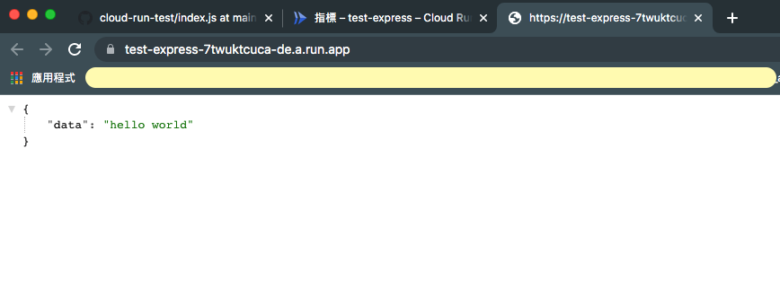
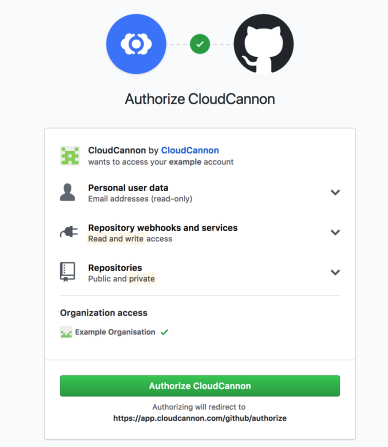
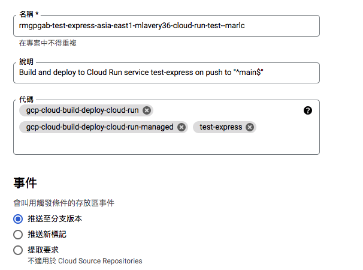
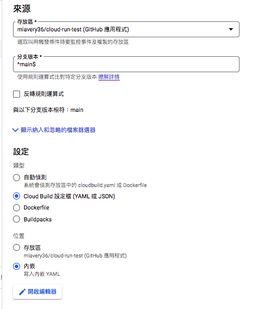
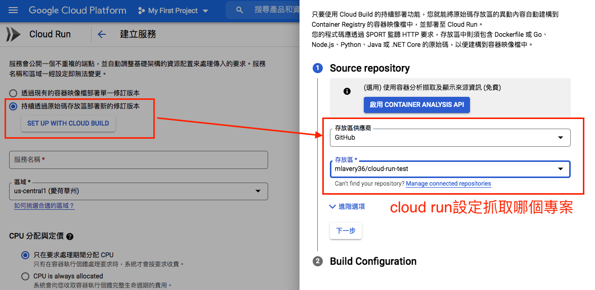
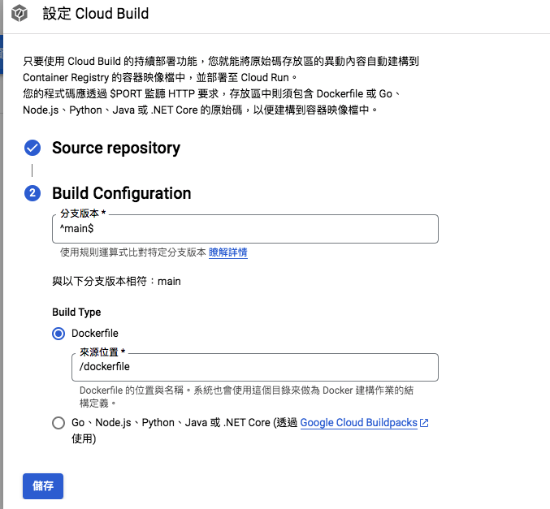
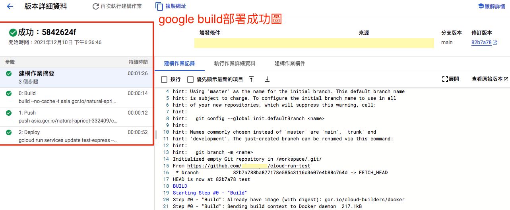
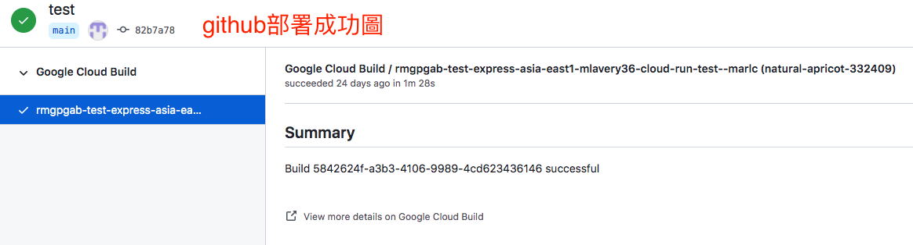

前言
一開始先接觸AWS的雲端服務，最近才開始學習使用GCP的服務，之前部署專案的經驗是使用AWS的EC2（對應GCP應該是Compute Engine），GCP我還沒自己開過機器，反而先接觸到了另一個服務，也就是Google run，對於想專心開發業務邏輯的工程師來說，可以更快速地處理部署，俗稱的Serverless。
Serverless?
工程師不需要管理伺服器機器，而是讓google cloud來幫你處理大部分的事項，你只需要將你的專案交付給google cloud啟動你的服務。
Serverless服務
- Cloud function: 對應AWS的Lambda。Serverless for function
- App Engine: Serverless for App
- Google run: Serverless for container支援Kubernetes =>今日重點
部署成功成果圖：

部署前-設定部分：
1. 部署前請先準備好你的專案 ＝> 準備一個hello world
如果你懶得想，那我這邊就給你
用一個簡單的index.js
1
2
3
4
5
6
7
8
9
10
11
12
13
14
15
16
17
18
19const express = require('express');
const app = express();
const PORT = 8080
app.get('/', (req, res) => {
res.send({ data: 'hello world' })
})
app.get('/test', (req, res) => {
res.send({ data: 'you are in test page.' })
})
app.get('/test2',(req,res)=>{
res.send({ data: 'you are in test2 page.' })
})
app.listen(PORT, () => {
console.log('server run')
})
2. 開通好Google Cloud帳號
3. google build跟GitHub連線你的帳號，才能抓到你的專案
會類似像這樣的連線，當時連線時沒有記錄到，所以上網抓了個示意圖

4. google build建立觸發條件，有三種，依照需求選擇
- 分支觸發：可設定推到特定分支才部署 => 這邊我選用推到main分支時觸發部署
- 新標記： 有符合git tag的部署
- 提取要求：有pull request時部署

下方其他設定部分

5. 在google run建立一個服務，裡面需要設定抓取github的哪個專案，
跟著步驟設定，可依照自己需求去改變選項，範例提供我的截圖


準備部署-程式部分：
在你的專案內準備兩個東西，都是google cloud要啟動你的服務時所需要的
1. google build需要的cloudbuild.yml
2. google Run需要的Dockerfile，因為google run是for container的～所以他會吃你的dockerfile包出docker image再啟動container服務。
而以下就會記錄要怎麼寫這兩個檔案囉
這兩個部分要花比較多時間去了解他的寫法。
cloudbubild.yml
1 | steps: |
cloudbuild想知道更清楚寫法可以到gcloud run deploy - 官方文件，裡面把每個參數都解釋了，可以搭配使用。
Dockerfile
1 | FROM node:14-slim |
觸發部署：把專案程式碼推到main分支，就會開始跑部署了
部署成功
google build跟github都會看到Ｖ圖示，且google run會直接給你一個domain，點進去就可以看到你的網站囉。


心得：
成功部署之後真的覺得對工程師來說很方便，前端工程師也可以痛個幾天入門，就可以快速部署上去，然後下一篇可以接續著記錄load balancer的服務，連貫的完成一個架站的過程。
下一篇文章：GCP-load balancer 負載平衡服務之proxy pass
資料參考：
官方文件
Google Cloud Run详细介绍
Cloud Build Deploying to Cloud Run
cloudbuild - bash指令寫法
gcloud run deploy - 官方文件
bash指令區